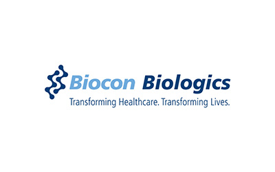
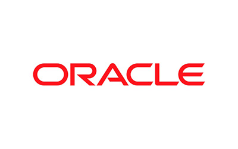
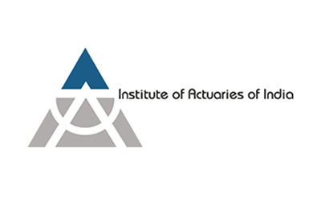
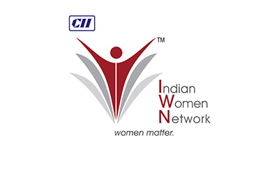
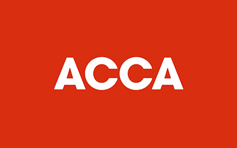

PES University Ring Road Campus (B.Com, B.Com Hons) / PES University Electronic City Campus (B.Com)
Admissions Test:
PES Entrance Process
College Timings:
B.Com / B.Com (Hons.) - 8:00 AM to 1:00 PM
Ranked #1
#1 University in Karnataka (New Universities under 5 years) by KSURF
PESU is NAAC A+ Accredited
PES University is accredited with A+ grade in NAAC, a national level accreditation body which is an autonomous institution under University Grants Commission (UGC)
Ranked #1
#1 B School in Karnataka – Times of India B School Rankings 2021
Get In Touch
Have questions about B.Com (General / Hons) admissions?
Share a few details and our admissions counsellors will walk you through eligibility, fees, scholarships and the application timeline — no obligation.
Fast Response — a counsellor calls back within 24 hours.
One-on-One Guidance — personalised help with eligibility and documentation.
No Obligation — ask questions before you decide to apply.
Enquire Now
Fill this in and we'll reach out shortly.
Overview
B.Com (General / Hons)
The Bachelor of commerce programme is designed to equip you with accounting and financial skills and build competencies required to succeed in the field of commerce. The three/four year programme will equip you with knowledge of accounting, principles, export and import laws, economic policies and other aspects that influences trade and business. B. Com is a renowned undergraduate course with many job opportunities. It lays a strong foundation for prospective learners. The B. Com degree course aims to teach students analytical abilities, financial management, and business skills by emphasising conceptual topics. After 3 years students who exit the program will get a BCom degree and those who continue and finish in 4 years will be awarded a BCom (Hons) degree.
50% aggregate score in 10+2 or equivalent in any stream from a recognized board. Register @ - https://admissions.pes.edu
About the Programme
Why B.Com Regular, B.Com Hons?
Integrated Learning: BCom subjects have been aligned with (CA Foundation in year 1, Intermediate in years 2 and 3 and Finals in 4th year)
Expert Faculty: Learn from experienced CA professionals, Industry Leaders, and Academic Experts.
Real-World Skills: Case studies, internships, financial modeling, and corporate simulations included.
Career-Ready: Graduate not just with a degree, but with an edge that employers demand.
PES Advantage: Benefit from our strong Industry Connections, Placement Support, and vibrant Learning Environment.
About the Programme
Program Highlights
Interaction and networking with Professors of Practise
CFO, CA & Entrepreneurs
Policy makers
Behavioural experts
International University Professors
Shaping techno commerce Professionals
Advanced excel & Python
Fintech Courses
Business simulation for entrepreneurship and capital market
Crypto and blockchain technologies
Career Guidance and Placement Assistance
CV building assistance
Mentoring
Training to enhance Apti and interview skills
Alumni Connect
Industry driven curriculum and assessment
Research oriented projects
Full semester internships
Commerce and Management hackathons
Case based learning
Skill Enhancement
Two Vocational training in three years
Training for banking examinations
Additional training for CA examination
Certificate program/workshop on Actuarial science, Export and Import Documentation, Commodity Market Operations
How We Teach
Pedagogy
01
Interactive Lectures
Engage students through interactive lectures that blend theoretical concepts with real-world examples. Encourage active participation, questions, and discussions to enhance understanding.
Case Studies
Integrate case studies derived from actual business scenarios to apply theoretical knowledge to practical situations. This hands-on approach fosters critical thinking and problem-solving skills.
Guest Lectures and Industry Insights
Invite industry experts and professionals to deliver guest lectures, providing students with valuable insights into current industry practices, trends, and challenges.
02
Workshops and Seminars
Conduct workshops and seminars focused on practical accounting software usage, and soft skills development. These sessions bridge the gap between academia and industry expectations.
Professional Certification Support
Offer dedicated support with study groups, practice exams, and mentoring. This ensures that students are well-prepared for certification, enhancing their employability.
Internships and Practical Experience
Facilitate internships and practical experiences with industry partners, allowing students to apply classroom learning to real-world situations, thus enhancing their practical skills and professional acumen.
03
Technology Integration
Leverage modern teaching technologies, simulations, and accounting software to familiarize students with the tools and technologies used in the industry, preparing them for a tech-savvy work environment.
Research Projects
Encourage students to undertake research projects related to emerging trends in commerce and management accounting. This promotes independent thinking and a deeper understanding of evolving industry dynamics.
Continuous Assessment
Implement a system of continuous assessment through quizzes, assignments, and presentations, providing regular feedback to students and promoting a consistent and thorough understanding of the subjects.
Careers
Career Prospects
01
Chartered Accountant
Tax auditing, Internal Auditor, Corporate finance, investing banking and private practice as a consultant to multiple firms.
02
Company Secretary
Compliance officer, chief advisor to the board of directors of a company, Legal advisor, public and private sector jobs.
Strategist, economist, research analyst, risk management analyst.
09
Statistics
Statistician, professor, business analyst, data analyst, risk analyst, mathematician.
10
Actuarial Science
Investment consultants, Life and health insurance, pension funds, government jobs as a finance consultant.
11
Foreign Trade
Relationship manager, foreign trade manager, export manager, foreign trade analyst, and business development analysts.
12
Commerce
IT sector, Banks, company, private or public sector firms, civil services etc.,.
13
Civil Services
Civil services is another career option after degree which offers a wider range of study and job options as a government employee. Other than B.com there are many other career options available to choose.
Placements have always been the USP of PES University. Professional placement assistance will be provided through the centralised placement cell of the university, along with organised training in soft skills, aptitude, etiquette, resume building, etc., from the first semester itself to instil the necessary qualities for students to succeed in campus placements.
In addition, the following will be extended to all our B.Com Gen./ (Hons) students:
Resume building and Interview workshops: Career assistance includes workshops on resume building, interview skills, and effective communication, preparing students for the competitive job market.
Mock Interviews: The university conducts mock interview sessions to help students gain confidence and polish their interview techniques. Feedback from industry experts is provided to help students refine their skills.
Internship Opportunities: The university facilitates internships with leading organisations, allowing students to gain practical experience, apply classroom knowledge, and establish connections within the industry.
Leverage of our Alumni Network: Graduates benefit from a strong and active alumni network that provides mentorship, networking opportunities, and insights into various career paths. Alumni often play a pivotal role in connecting current students with employment opportunities.
Career Counselling: The university offers personalised career counselling services to help students identify their strengths, interests, and career goals. This guidance assists students in making informed decisions about their professional journeys.
*CA training with extra payment will be available in the afternoon 2-4 PM, which will be registration based after commencement of classes.





Curriculum
Curriculum Overview
The B.Com (Hons) program at PES University is designed to provide students with a comprehensive education in commerce, integrating theoretical knowledge with practical exposure and industry engagement. The curriculum spans across eight semesters over four years, offering a balanced mix of academic rigor and hands-on experience to prepare students for a successful career in commerce and finance. The B.Com (Hons) program is a four-year course. Students who exit after three years will receive a B.Com degree, while only those completing all four years will be awarded the B.Com (Hons) degree.
Curriculum Design
The B.Com (Hons) program at PES University is carefully structured to provide a balance between academic learning and practical experience. In the first six semesters, students work through case studies, worksheets, and research papers to develop critical thinking and analytical skills. Hands-on learning is reinforced through bootstrap projects, hackathons, and guest talks led by industry experts. Additionally, club activities, industrial visits, and summits offer exposure to real-world business environments. By the end of the sixth semester, students have completed internships, providing them with direct industry experience. In the final two semesters, students participate in live projects and complete major academic projects, applying their skills in real-time business contexts. Specialized papers and aptitude tests help solidify their understanding of commerce and finance.
Special Topics
PES University offers unique special topics that allow students to gain expertise in critical and emerging areas. Topics such as strength and conditioning/yoga promote holistic well-being, while commodity market trading and financial modelling build practical business skills. Students also gain knowledge in EXIM management, Six Sigma quality control, and supply chain analytics, as well as emerging technologies like blockchain and cryptocurrency. These special topics ensure that students are well-prepared for diverse career paths and can adapt to new industry trends.
Industry-Standard Tools
Students are trained in essential tools used in the industry, including MS Excel, Tableau, JMP, SPSS, Tally, R, SQL, and Python. These tools are integrated into the curriculum to ensure that students are proficient in data analysis, financial modeling, and decision-making. This hands-on training ensures that graduates are ready to meet the demands of the business world.
Professional Exposure
The B.Com (Hons) program at PES University offers extensive opportunities for professional exposure. Certificate programs and hands-on experience with data tools like Python, Tableau, and Excel help students build specialized skills. Hackathons, studyathons, workshops, and summits provide collaborative learning environments where students can innovate and solve real-world challenges. Industrial visits and guest talks with industry professionals ensure students gain insights into current business practices, while research orientation encourages them to publish academic work. This comprehensive approach ensures that students graduate with a well-rounded education and are prepared to thrive in the professional world.
Curriculum
Curriculum Structure
About the Programme
B.Com (General / Hons)
Business Regulatory Framework
Research Methodology and Statistics
Accounting for Business
Indian Financial System
Business Communication
Indian Constitution
Management Accounting
Financial Management and Modelling
Business Economics
Strategic Management
Data Visualization
Environmental Studies & Life Sciences
Direct Tax-I
Advanced Accounting-I
Cost Accounting
Goods and Services Tax-I
EIE
Social Internship
Direct Tax-II
GST Compliance and Customs
Advanced Accounting-II
Corporate and Other Laws
Elective-I
EIE
Audit and Ethics
Elective-II
Elective-III
Financial Analytics (Hons. Only)
SQL (Hons. Only)
Corporate Internship
Organisational Behaviour (Hons. Only)
Internship
Elective-IV
Elective-V
Elective-VI
Risk Management
Term Paper
Python
Internship
Financial Support
Merit scholarships, awarded on performance
Over ₹140 crores in merit scholarships have been given to PES University students since 2014.
Merit Scholarships
Awarded on CGPA / SGPA
Scholarship
50%
Prof. MRD Scholarships
Merit Certificate + 50% Tuition Fee Refund for Top 5% of the Students based on their CGPA.
Scholarship
40%
Prof. CNR Rao Scholarships
Merit Certificate + 40% Tuition Fee Refund for the next 20% of the Students based on their SGPA.
Scholarship
7.75+
Distinction Awards
Merit Certificate for Students securing 7.75+ SGPA.
PES Loyalty Program
Awarded on family / institutional ties, every year of study
Loyalty
30%
PES Employees
Children of full-time staff, 5+ years employment.
Loyalty
20%
PES Institution Students
Graduates of any PES institution or sister concern.
Loyalty
10%
Siblings of Students
Siblings of currently enrolled PES students.
Loyalty
10%
Alumni Family
Siblings and children of PES University alumni.
University Highlights
Recognition beyond the programme
The accreditations and rankings behind PES University as a whole.
Ranking
#1
University in Karnataka
Among new universities under 5 years, ranked by KSURF.
Accreditation
A+
NAAC Accredited
PES University holds NAAC's top-grade accreditation nationally.
Ranking
#1
B-School in Karnataka
Times of India B-School Rankings, 2021.
Recognition
2nd
Most Preferred B-School
Second only to IIM Bangalore among B-School aspirants, per Times of India.